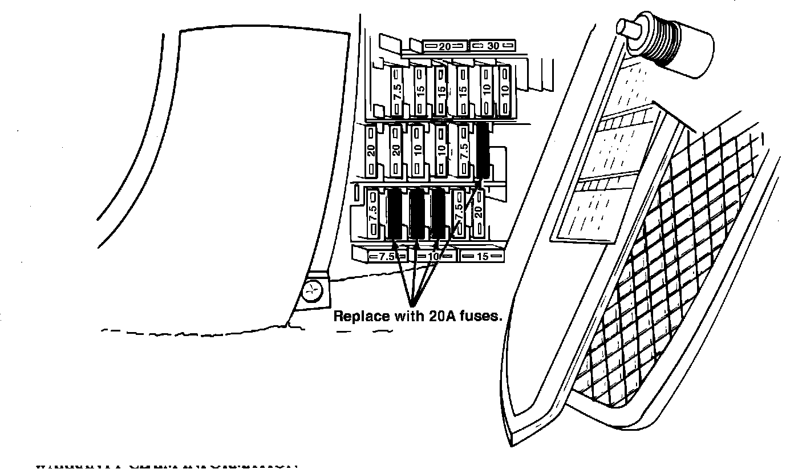

Power Window - Fuse Amperage Change
88acura01February 16, 1988
YEAR MODEL APPLICATION
1988 LEGEND THRU VIN
SEDAN JH4KA4 . . .
JC017119
88-004
Power Window Fuse Change
SUBJECT The power window fuse amperage has been increased from 15A to 20A after VIN JH4KA4.. JC017119. The power window fuses should be replaced on all affected cars in your inventory before sale and on all customer-owned cars at the first regular service or other dealer visit.

CORRECTIVE ACTION
Replace all four power window fuses and the fuse box label in the under-dash fuse box. (Both the fuses and label are included in the Power Window Fuse Kit listed under PARTS INFORMATION.)
NOTE: If you refer to the fuse box label when replacing the fuses, be aware that the label is a "mirror image" of the fuse box (i.e., a fuse on the left side of the fuse box is shown on the right side of the label).
PARTS INFORMATION
Power window Fuse Kit: P/N 06382-SD4-A03
WARRANTY CLAIM INFORMATION
Operation number: 737130
Flat rate time: 0.3 hour
Failed P/N: 98200-31500
Defect code: 068
Contention code: B99